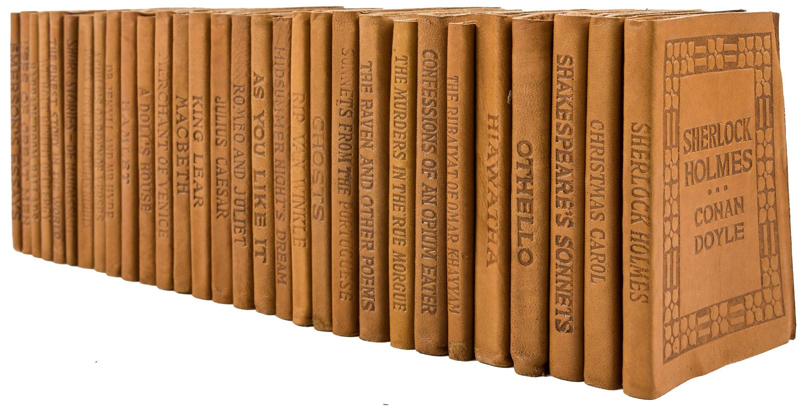

Little Leather Library Collectors is a website dedicated to all things related to the Little Leather Library Corporation aka Little Luxart Library aka Robert K Haas, Inc., book publishers in the 1910's and 1920's. When I began collecting in 2021, I found it very difficult to find information and photos of the various editions LLL books produced, but after searching through dozens of archives, I found a lot of interesting things from all corners of the internet that I hope you find interesting as well. This website makes it easy to browse photos, editions, advertisement clippings, and other items related to the Little Leather Library Corp., but I also want to open this site up to host photos and stories from other collectors like myself.
Photo source: PGA Galleries
The Little Leather Library Corporation of New York was founded in 1915 by Albert Boni, Harry Scherman and Maxwell Sackheim. They were initially used as premiums in Whitman's Sampler. These small 4 inch by 3 inch books were perfect for was to become one of the first attempts to mass-market inexpensive books in the United States. This pioneering effort eventually led to the establishment of Book of the Month Club, Modern Library publishing company, which ultimately spawned Random House Publishers as a subsidiary company.
Initially the books were sold individually through retail stores with the Woolworth's chain of retail stores being the largest. The publishers were extremly creative in their marketing of these books from placing them in Whitman's Sampler boxes to redeeming them by sending in X number of Florida Orange Wrappers. There is some indication that single volumes were included as promotional items in cereal boxes as a means of advertising the collection. Sets could also be purchased to send to soldiers fighting in WW1.
The first versions of the Little Leather Library volumes were bound in real leather. By the early 1920's the Little Leather Library was being advertised in popular magazines and sold directly by mail order. The books were advertised on the back covers of Mentor Magazine, Pictorial Review, The Youth's Companion as well as National Geographic magazine ten different months from January 1921 to October 1924. By then the genuine leather covers originally used had been replaced with an early type of imitation leather consisting of latex coated canvas on the outside with flocking on the inside. This change was due to the war effort (WW1) which needed the leather for helmets etc. Sometime later, the company was bought out by Robert K. Haas but stopped publishing new titles around 1925.
Individual books were sold for 10 cents, sets of 30 books were sold for $2.97 and a set of 100 books was priced at $9.97.
The following webpages have been instrumental to the creation of this website. We give thanks to: Internet Archive, The Bookend Collector, UnEarthly Books (defunct), Tom Fox, and Booksby Press